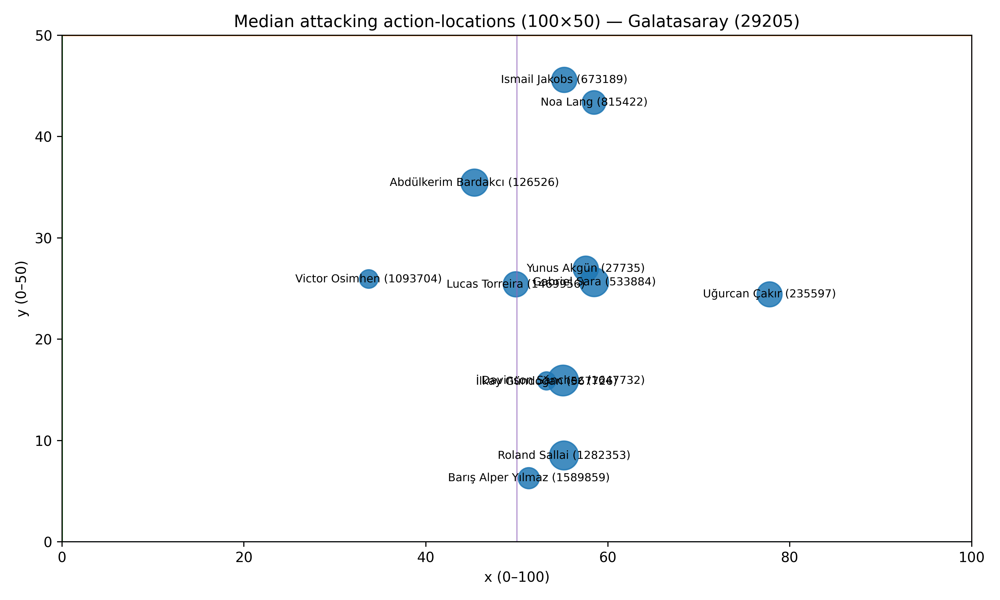
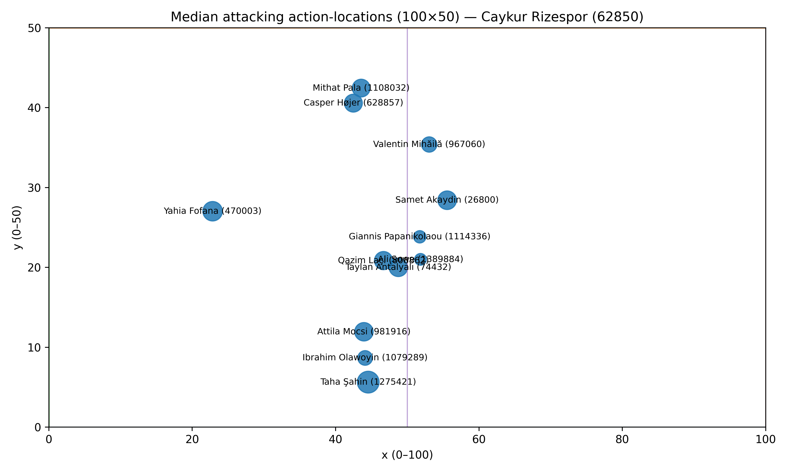

HPFA positions_v3 — attacking-only + GK + auto flip (100×50)
Galatasaray (29205)
: flip_second_half=True (m1=59.2, m2=50.7, d0=8.5, d1=4.9)
Caykur Rizespor (62850)
: flip_second_half=True (m1=50.7, m2=53.3, d0=2.6, d1=0.9)
Galatasaray (29205): GK included: Uğurcan Çakır (235597)
Caykur Rizespor (62850): GK included: Yahia Fofana (470003)
Attacking median positions — Galatasaray (29205)

Attacking median positions — Caykur Rizespor (62850)
